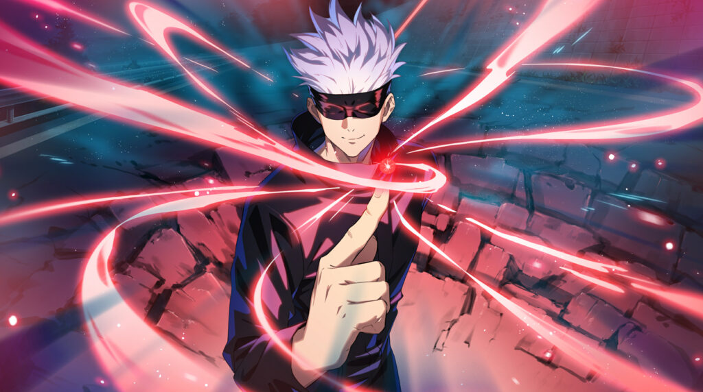

- Flash (黒こく閃せん Kokusen?): A technique that creates spatial distortion when a user connects with an impact of cursed energy within 0.000001 seconds of a physical hit. The phenomenon causes cursed power to flash black, creating a more potent attack to the power of 2.5 of a normal hit. Its currently unknown how many times Gojo has performed Black Flash.
- Infinity (無む限げん Mugen?): Being the neutral form of the Limitless, the Infinity is commonly known as the ability to stop, although this is a common misconception as the true power of the Infinity is to slow things down. When something attempts to hit Satoru, the person or object in question instead hits the infinity between himself and them. According to Satoru, this is the convergence of an infinite series and comes straight from the paradox of Achilles and the tortoise. Akin to the way Achilles will never catch the tortoise due to the potential, infinite amounts of finite space separating them or how the real number one will never touch the real number two due to the infinite amount of fractions that separate them, the opponent will never touch Satoru due to the infinity between them. Satoru can decide what does and doesn't touch him and can do so based upon mass, speed, and danger ratings.
- Cursed Technique Lapse: Blue (術じゅつ式しき順じゅん転てん「蒼あお」 Jutsushiki Junten・Ao?): The reinforced version of the neutral limitless; Blue is the byproduct of Gojo amplifying the Limitless and negative energy, producing a vacuum. Through these, Gojo creates a scenario where the world itself is forced to correct itself and fill in the negative space, causing all matter in the range of the commanded space to be pulled together.

- Cursed Technique Reversal: Red (術じゅつ式しき反はん転てん「赫あか」 Jutsushiki Hanten・Aka?)[8]: Being an inversion of Blue, Red has the opposite effect. Using his reversal technique to invert the properties of Blue, Satoru activates the divergence of his infinity and causes an extremely powerful repulsive force, repelling all matter in its vicinity. Being an ability that is powered by positive cursed energy and formed as a reverse curse technique, the ability has two times the destructive ability of Blue.[9]
- Hollow Technique: Purple (虚きょ式しき「茈むらさき」 Kyoshiki・Murasaki?): A non-standard technique of Limitless more potent and destructive than the 2 standard forms that only select few know about, even among the members of the Gojo Family. Satoru snaps his fingers, combining "Blue" (attraction) and "Red" (repulsion), generating a long-ranged singularity where both effects are combined, deleting and erasing all matter in its path instantaneously.
- Unlimited Void (無む量りょう空くう処しょ Muryōkūsho?)[11]: Satoru's Domain Expansion. It creates a metaphysical space that causes the victims to receive all kinds of stimuli and information endlessly, restraining their thought processes and actions. [12] In terms of raw strength, Satoru's domain is equal to Sukuna's own Malevolent Shrine on the inside, only losing due to Malevolent Shrine's open domain that allowed Sukuna to destroy the barrier of Unlimited Void. Satoru's skill with his Domain Expansion is so great that he can precisely control the range and time of it's activation for only 0.2 seconds, limiting its lasting effect on those he traps within it,[13] and is able to freely change the conditions of Unlimited Void's barrier. Those he makes physical contact with are also immune to its effect.